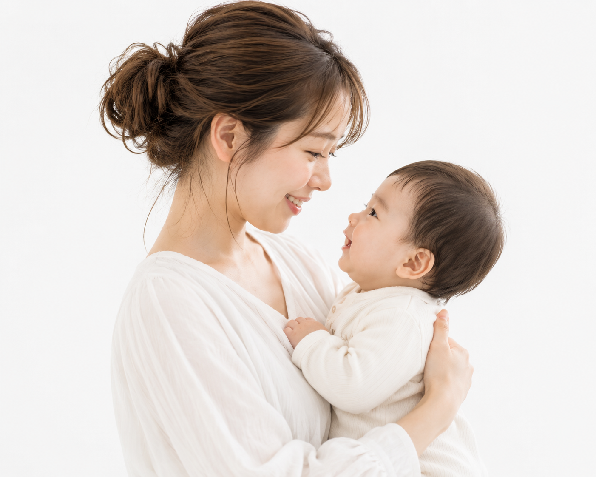

助産師として19年間、産後のママたちと関わる中でずっと感じていたことがあります。
「産院を退院したあと、サポートがほとんどなくなる。」
でも体のつらさは、そこから本番だったりします。その思いで、このサロンを立ち上げました。
- 助産師免許・看護師免許
- 産前産後専門整体師
- 赤ちゃん整体師

ママは、家族の中の太陽です。
あなたが元気だと、家族も明るくなります。
でも産後の自分のことは後回しにしていませんか？
そのつらさ、まだ諦めなくて大丈夫です。
新河岸・完全プライベートサロン。
赤ちゃん連れでどうぞ気軽にいらしてください。
陽 -Akari- ｜ マタニティ産後専門整体・赤ちゃん整体

助産師歴19年。産後ママと赤ちゃんのことを熟知しています
産院での勤務経験をもとに、産後の体の変化・育児の悩みに専門的に対応。一般的な整体師とは異なる視点で、ママと赤ちゃん両方をサポートします。
電気治療ではなく、手技でしっかり整えます
オーダーメイドで全身を整えます。「施術後に体が軽くなった」と感じていただける丁寧なアプローチ。ボキボキしない整体です。
赤ちゃん連れOK・完全予約制の貸切プライベートサロン
他のお客様と時間が重なりません。授乳・おむつ替えもOK。泣いてしまっても、周りの目を気にせず過ごせます。

産後整体で伺いました。ハンドマッサージでしっかり整えていただき施術後に体が軽くなった感覚がありました。以前他院では、少しマッサージしてもらってからその後ほとんどが電気治療だったため、こちらの店舗に出会えて良かったです。
Google レビュー
予約制で貸切なので周りの目を気にせず通えますし、赤ちゃんと一緒に通えるのも強みです。助産師さんなので育児の悩みも相談できたり、自宅でのセルフトレーニング方法も教えていただけたりと、自分自身と赤ちゃんのこと両方の悩みを解決してくれるのは他に無いと思います。
Google レビュー

志賀 諒子
Ryoko Shiga
助産師として19年間、産後のママたちと関わる中でずっと感じていたことがあります。
「産院を退院したあと、サポートがほとんどなくなる。」
でも体のつらさは、そこから本番だったりします。その思いで、このサロンを立ち上げました。
¥3,980
初回限定価格（税込）
通常価格 ¥8,800